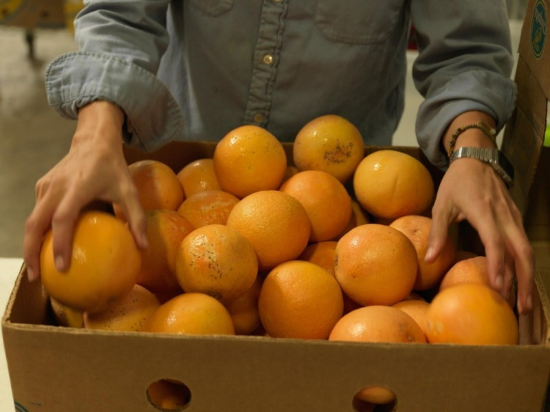

Promoting Sustainable Food

Food is life. Food is happiness. Food is love. Our relationship with it is universal, primal, historic, rich in tradition and pride.
Right now, most of us do not know where our food comes from. A greedy elite are industrializing, commodifying and controlling every aspect of our food system from genome to grocery store. They are growing our food on huge monoculture farms, spraying genetically modified crops with obscene amounts of chemicals and feeding these crops to factory farmed animals.
The result is a broken system: soils drained of nutrients, poisoned waterways and the destruction of a precious diversity of crop varieties that have enabled human societies to thrive from the mountains to the coast for millennia. At the other end of the food chain, urban consumers especially the poor have little choice but to buy pre packaged food built devoid of nutrition.
Feeding the world's growing population is no small challenge. But the false solutions pushed by big industrial farming corporations, GMOs and toxic pesticides, to name a few come at steep costs for the environment and human health.
Six big agribusiness giants control nearly 70 percent of the world's seed market, much of which has been genetically modified so they can reap profits on every seed they sell.
Four global corporations control 75 percent of all global grain trade.
The top 10 global food processing companies control 26 percent of global food markets.
The livestock sector accounts for 14 percent of greenhouse gas emissions worldwide, roughly equivalent to emissions from the transportation sector.
A growing food movement is starting to form around the world. More people are demanding to know where their food is coming from. Farmers and communities are reclaiming control over the seeds of life and their right to self-determination through the food they grow and eat. A number of far-sighted corporations are looking to meet the evolving demands of the consumers they serve with a food system that matches this growing shift in consciousness.
We're here to support the global food movement based on "ecological farming"-where most of our food is grown ecologically and farmers and consumers alike reject toxic pesticides, chemical fertilizers and genetically modified seeds. It's a future in which people from all walks of life work together to build a system that is best for their families, farmers and for the planet.
But all need to act if we're going to make a dent.